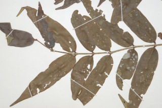
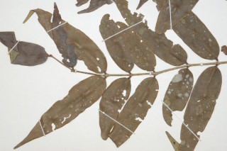

Large shrubs or treelets ca. 4 m tall.
ದೊಡ್ಡ ಗಾತ್ರದ ಪೊದೆಗಳು ಅಥವಾ ಅಂದಾಜು 4 ಮೀ.ಎತ್ತರವುಳ್ಳ ಕಿರುಮರಗಳು.
ഏതാണ്ട് 4 മീറ്റര് ഉയരമുളള, വന് കുറ്റിച്ചെടികളായോ ചെറുമരങ്ങളായോ വളരുന്നു.
பெரிய குத்துச்செடி அல்லது சிறிய மரங்கள், 4 மீ. உயரம் வரை வளரக்கூடியது.
Young branchlets quadrangular, slender, glabrous.
ಕಿರುಕೊಂಬೆಗಳು ತೆಳುವಾಗಿದ್ದು 4 ಕೋನಗಳನ್ನು ಹೊಂದಿದ್ದು ರೋಮರಹಿತ -ವಾಗಿರುತ್ತವೆ.
അരോമിലമായ, നേര്ത്ത ഇളം ഉപശാഖകള് ചതുഷ്ക്കോണത്തിലാണ്.
குறுத்திலுள்ள சிறிய நுனிக்கிளைகள் குறுக்குவெட்டுத் தோற்றத்தில் நான்கு கோணங்களுடையவை, மெல்லியது, உரோமங்களற்றது.
Leaves simple, opposite, decussate; petiole 0.2 cm long, glabrous; lamina 6.5-11.5 x 1.5-2.8 cm, lanceolate with narrowly tapering apex, base rounded, margin entire, coriaceous, glabrous; midrib canaliculate with intramarginal_nerve; secondary_nerves faintly visible at least when dry, ca. 15 pairs; tertiary_nerves obscure.
ಎಲೆಗಳು ಸರಳವಾಗಿದ್ದು, ಕತ್ತರಿಯಾಕಾರದ ಅಭಿಮುಖ ಜೋಡನಾ ವ್ಯವಸ್ಥೆಯ -ಲ್ಲಿರುತ್ತವೆ; ತೊಟ್ಟುಗಳು 0.2 ಸೆಂ.ಮೀ. ರೋಮರಹಿತವಾಗಿರುತ್ತವೆ; ಪತ್ರಗಳು 6.5-1.5 X 1.5 –2.8 ಸೆಂ.ಮೀ ಗಾತ್ರ ಹೊಂದಿದ್ದು ಭರ್ಜಿಯ ಆಕಾರದಲ್ಲಿದ್ದು ಸಂಕುಚಿತವಾಗಿ ಕ್ರಮೇಣವಾಗಿ ಚೂಪಾಗುತ್ತಾ ಹೋಗುವ ತುದಿ ಮತ್ತು ದುಂಡಾದ ಬುಡವನ್ನು ಹೊಂದಿರುತ್ತವೆ;ಅಂಚು ನಯವಾಗಿರುತ್ತದೆ;ಮೇಲ್ಮೈ ರೋಮರಹಿತವಾಗಿದ್ದು ತೊಗಲ್ಲ -ನ್ನೋಲುವ ಮಾದರಿಯಲ್ಲಿರುತ್ತದೆ;ಮಧ್ಯನಾಳ ಮೇಲ್ಭಾಗದಲ್ಲಿ ಅಂತರ ಅಂಚಿನ ನಾಳವನ್ನೊಳಗೊಂಡು ಕಾಲುವೆಗೆರೆ ಸಮೇತವಾಗಿರುತ್ತದೆ; ಎರಡನೇ ಮತ್ತು ಮೂರನೇ ದರ್ಜೆಯ ನಾಳಗಳು ಅಸ್ಪಷ್ಟ.
ലഘുവായ ഇലകള്, സമ്മുഖ, ഡെക്കുസേറ്റ് ക്രമത്തിലാണ്; അരോമിലമായ ഇലഞെട്ടിന് 0.2 സെ.മീ നീളം; പത്രഫലകത്തിന് 6.5 സെ.മീ മുതല് 11.5 സെ.മീ വരെ നീളവും 1.5 സെ.മീ മുതല് 2.8 സെ.മീ വരെ വീതിയും, ആകൃതി വീതികുറഞ്ഞവസാനിക്കുന്ന അഗ്രത്തോടുകൂടിയ, കുന്താകൃതിയുമാണ്, പത്രാധാരം വൃത്താകാരത്തിലാണ്, അരികുകള് അവിഭജിതമാണ്, ചര്മ്മില പ്രകൃതം, അരോമിലം; അന്തര്സീമാന്ത സിരകളോട് കൂടിയ മുഖ്യസിര ചാലുളളതാണ്; ഏതാണ്ട് 15 ജോഡി ദ്വിതീയ ഞരമ്പുകള്, ഉണങ്ങുമ്പോഴെങ്കിലും, ലഘുവായി മാത്രം കാണുന്നതാണ്; ത്രിതീയ ഞരമ്പുകള് അപ്രസക്തമാണ്.
இலைகள் தனித்தவை, எதிரடுக்கமானவை, குறுக்குமறுக்கமானவை; இலைக்காம்பு 0.2 செ.மீ., நீளமானது, உரோமங்களற்றது; இலை அலகு 6.5-1.5 X 1.5-2.8 செ.மீ., ஈட்டி வடிவானது, அலகு நுனி நீண்ட குறுகிய முனை, அலகின் தளம் வட்டமானது, அலகின் விளிம்பு முழுமையானது, கோரியேசியஸ், உரோமங்களற்றது; மையநரம்பு அலகின் மேற்பரப்பைவிட பள்ளமானது, இண்ட்ராமார்ஜினல் நரம்பு (விளிம்பு நரம்பு) கொண்டது; இலை உலரும் போது இரண்டாம் நிலை நரம்புகள் சிறிதளவு கண்களுக்கு புலப்படக்கூடியது மற்றும் 15 ஜோடிகள்; மூன்றாம் நிலை நரம்புகள் கண்களுக்குப் புலப்படாது.
Inflorescence clusters of short peduncled cymes, lateral; petals blue; calyx red.
ಹೂಗಳು ಕಿರಿದಾದ ವೃಂತವನ್ನುಳ್ಳ ಹಾಗೂ ಪಾರ್ಶ್ವದಲ್ಲಿರುವ ಮಧ್ಯಾರಂಭಿ ಪುಷ್ಪಮಂಜರಿಗಳಲ್ಲಿನ ಗುಚ್ಛಗಳಲ್ಲಿರುತ್ತವೆ; ಪುಷ್ಪದಳಗಳು ನೀಲಿ ಬಣ್ಣ ಹೊಂದಿದ್ದು ಪುಷ್ಪ ಪಾತ್ರೆ ಕೆಂಪು ಬಣ್ಣದಲ್ಲಿರುತ್ತದೆ.
ചുവന്ന ബാഹ്യദളപുടവും, നീല ദളങ്ങളുമുളള പൂക്കള്, കുറിയ തണ്ടുളള പാര്ശ്വസ്ഥ സൈമുകളുടെ കൂട്ടങ്ങളായുണ്ടാകുന്നു.
மஞ்சரி ஓர் தொகுப்பான சிறிய மஞ்சரி காம்புடைய சைம், தண்டின் பக்கவாட்டில் அமைந்தவை; அல்லி இதழ்கள் நீல நிறம்; புல்லி இதழ்கள் சிவப்பு நிறமானது.
Berry, black; seed 1.
ಬೆರ್ರಿ ಕಪ್ಪು ಬಣ್ಣ ಹೊಂದಿದ್ದು ಒಂದು ಬೀಜವನ್ನೊಳಗೊಂಡಿರುತ್ತದೆ.
ഒറ്റവിത്തുളള കായ, കറുത്ത ബെറിയാണ്.
முழுச்சதைகனி (பெர்ரி), கருப்பு நிறமானது; விதை ஒன்றுடையது.
 
